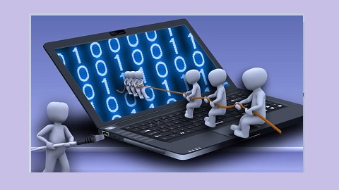

¿Por qué es importante?
Lo que tenes que saber
Hoy en día, la tecnología ha evolucionado de manera considerable tanto que existe la manera rápida y sencilla de hackear las cuentas o plataformas de una empresa poniendo en riesgo toda la información relevante; sin embargo, existe una seguridad informática que permite prevenir este tipo de problemas.
La ciberseguridad es una herramienta que permite tener la infraestructura electrónica de una empresa libre de robos en la base de datos de los usuarios y contraseñas. Este tipo de seguridad mantiene en confidencialidad los documentos, contratos, datos de personal, así como los procesos que lleva a cabo una compañía para aumentar su productividad de forma eficaz. La importancia de la seguridad informática radica en la prevención, puesto que se quiere evitar el robo de información en las distintas áreas de la empresa. Además, ayuda a identificar cuando existen amenazas de virus y riesgos en los sistemas de información internos. Por ello, es que las diferentes organizaciones destinan una cantidad de fondos al presupuesto de ciberseguridad para que los empleados no se preocupen por perder las diferentes estrategias o documentos que han generado.
Siempre un paso adelante
¿Cómo prevenir algunas amenazas?
Si quieres cerciorarte que la información de un negocio esté completamente protegida puedes considerar estos puntos:
-Crea contraseñas largas. Deben contener signos y números.
-Verifica que el sistema operativo y las diversas herramientas tecnológicas se encuentren protegidas.
-Actualiza el sistema operativo de las computadoras, así como su antivirus.
-Evita acceder a hipervínculos o archivos adjuntos desconocidos.
-Es importante que las empresas tengan una seguridad informática para que la información se encuentre en continuo análisis y en una ejecución proactiva para identificar si existe una aplicación vulnerable.
Pero la herramienta más potente es la formación de los usuarios. Es necesario involucrar a las personas sobre el peligro de los ciberataques, tanto en el ámbito laboral como en el personal. Según un estudio realizado por el INCIBE, Instituto Nacional de Ciberseguridad, el 92% de la población reconoce que necesita formación sobre seguridad en internet.
La ciberseguridad es vital para las empresas en la actualidad, y es un aspecto que necesita del esfuerzo de toda la sociedad.